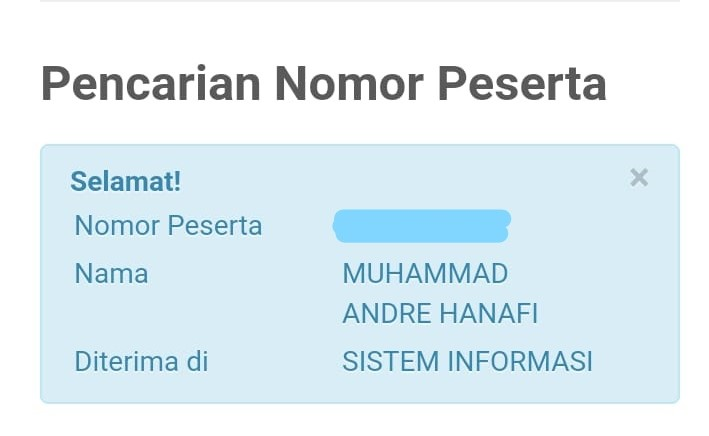
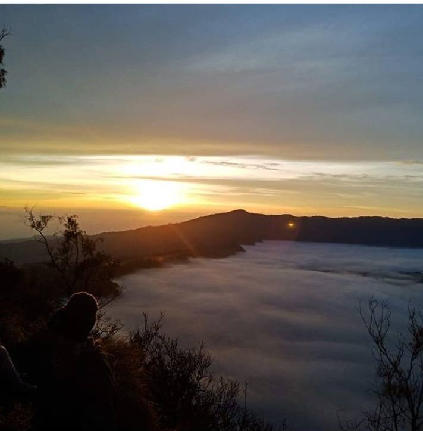

-Nama Saya Muhammad Andre Hanafi dan Ini adalah Cerita Saya-
Nama Saya Muhammad Andre Hanafi. Saya berasal dari Bekasi. Saat ini, Saya sedang berkuliah di Institut Teknologi Sepuluh Nopember Surabaya. Nomor induk Saya, atau di ITS biasa disebut NRP, adalah 05211940000105. Banyak hal luar biasa terdapat di depan dan Saya siap meraihnya dengan berusaha.
Sebagai bagian dari pembelajaran Pemrograman Web C, di bawah ini merupakan tautan tugas yang sudah diberikan hingga minggu ke-4.
Tidak ada yang tahu masa depan seseorang.
Semuanya berawal dari kegagalan Saya pada SBMPTN 2019. Saya yang dinyatakan gagal lolos saat itu merasa sedih. Saya merasa apakah Saya memiliki kesempatan untuk berkuliah di PTN tahun ini. Malamnya, Saya yang tidak ingin berlarut-larut
dalam kesedihan mencari informasi mengenai jalur mandiri yang ada di berbagai PTN di Indonesia. Kemudian, Saya mendaftar tes mandiri di beberapa PTN, salah satunya ITS. Saat itu orang tua Saya sudah menawarkan Saya untuk mendaftar
di Universitas swasta sebagai langkah antisipasi jika Saya tidak diterima di PTN mana pun. Akan tetapi, Saya menolak tawaran itu dikarenakan Saya khawatir jika Saya telah memiliki cadangan tempat kuliah, Saya akan menjadi tidak fokus
belajar persiapan tes mandiri dan khawatir aka menganggap remeh tes yang akan Saya hadapi. Dengan demikian, Saya hanya bergantung pada tes mandiri PTN. Setelah melalui seluruh tes mandiri, Saya harap-harap cemas menunggu hasil pengumumannya.
Saat Saya membuka pengumuman mandiri ITS, Saya terkejut karena Saya diterima. Saya benar-benar bersyukur karena mimpi Saya untuk berkuliah di PTN tercapai.

Foto pengumuman Saya lolos SM ITS.
Pengalaman mendekatkan diri dengan teman-teman baru.
Sebagai anak rantau dengan sedikit teman di Surabaya, penting bagi Saya untuk mencari teman-teman agar memudahkan Saya beradaptasi di sini. Setelah melalui banyak minggu perkuliahan, Saya pada akhirnya memiliki teman-teman dari berbagai
daerah dan latar belakang. Beberapa diantaranya menjadi teman dekat Saya hingga saat ini. Singkat cerita, Saya dan teman-teman Saya memiliki rencana untuk pergi jalan-jalan setelah suntuk menjalani EAS dan berbagai Final Project. Pilihan
kami saat itu akhirnya jatuh ke Bromo. Sejujurnya, Saya sangat gugup karena itu merupakan perjalan jauh pertama kali Saya dengan teman-teman tanpa diawasi oleh orang yang lebih tua, hehe.
Pada Hari-H, kami berkumpul dan berangkat dari Surabaya sekitar jam 22:00 WIB. Kami bertiga naik dua motor di mana Saya menumpang pada salah satu motor teman Saya. Perjalan kami tempuh melalui beberapa wilayah yaitu Sidoarjo dan
Pasuruan. Saat kami sampai di Alun-Alun Pasuruan, kami berhenti terlebih dahulu untuk makan dan istirahat. Sekitar jam 01:00 WIB pagi, kami melanjutkan perjalanan kami naik ke Taman Nasional Bromo. Perjalanan yang gelap dan dingin
membuat kami bertiga khawatir akan terjadinya hal-hal yang tidak diinginkan. Untungnya, hingga kami sampai di gerbang TN Bromo, tidak terjadi apa-apa.

Menikmati sunrise di bukit sekitar Bromo, pagi sekitar pukul 05:00 WIB
Kami akhirnya mendapat spot untuk menikmati sunrise di bukit sekitaran Bromo sekitar pukul 04:30 WIB. Kami bersantai duduk sambil berbincang menunggu sunrise. Saat matahari sudah cukup terang, kami memutuskan untuk mencari spot foto lain dan berjalan menaiki motor melalui padang pasirnya. Kami menelusuri padang pasir tersebut selama berjam-jam dan memutuskan untuk turun dari TN Bromo lewat jalur Malang di mana sebelumnya kami naik melalui jalur Pasuruan. Pengalaman tersebut merupakan salah satu pengalaman terbaik Saya.